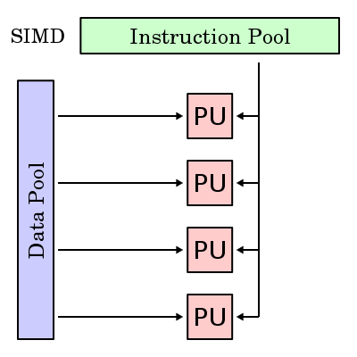

4.1 ASPECTOS BÁSICOS DE LA COMPUTACIÓN PARALELA
Conjunto de elementos de procesos independientes que operan de una forma conjunta para resolver problemas de elevado coste computacional.
Ámbito de aplicación:
La computación paralela es una forma de cómputo en la que muchas instrucciones se ejecutan simultáneamente, operando sobre el principio de que problemas grandes, a menudo se pueden dividir en unos más pequeños, que luego son resueltos simultáneamente (en paralelo).
Hay varias formas diferentes de computación paralela: paralelismo a nivel de bit, paralelismo a nivel de instrucción, paralelismo de datos y paralelismo de tareas. El paralelismo se ha empleado durante muchos años, sobre todo en la computación de altas prestaciones, pero el interés en ella ha crecido últimamente debido a las limitaciones físicas que impiden el aumento de la frecuencia. Como el consumo de energía —y por consiguiente la generación de calor— de las computadoras constituye una preocupación en los últimos años, la computación en paralelo se ha convertido en el paradigma dominante en la arquitectura de computadores, principalmente en forma de procesadores multinúcleo.
Las computadoras paralelas pueden clasificarse según el nivel de paralelismo que admite su hardware: equipos con procesadores multinúcleo y multi-procesador que tienen múltiples elementos de procesamiento dentro de una sola máquina y los clústeres, MPPS y grids que utilizan varios equipos para trabajar en la misma tarea. Muchas veces, para acelerar la tareas específicas, se utilizan arquitecturas especializadas de computación en paralelo junto a procesadores tradicionales.
Los programas informáticos paralelos son más difíciles de escribir que los secuenciales, porque la concurrencia introduce nuevos tipos de errores de software, siendo las condiciones de carrera los más comunes. La comunicación y sincronización entre diferentes subtareas son algunos de los mayores obstáculos para obtener un buen rendimiento del programa paralelo.
La máxima aceleración posible de un programa como resultado de la paralelización se conoce como la ley de Amdahl.
4.2 TIPOS DE COMPUTACIÓN PARALELA
Paralelismo a nivel de bit
Desde el advenimiento de la integración a gran escala (VLSI) como tecnología de fabricación de chips de computadora en la década de 1970 hasta alrededor de 1986, la aceleración en la arquitectura de computadores se lograba en gran medida duplicando el tamaño de la palabra en la computadora, la cantidad de información que el procesador puede manejar por ciclo.
Históricamente, los microprocesadores de 4 bits fueron sustituidos por unos de 8 bits, luego de 16 bits y 32 bits, esta tendencia general llegó a su fin con la introducción de procesadores de 64 bits, lo que ha sido un estándar en la computación de propósito general durante la última década.
Paralelismo a nivel de instrucción
Los procesadores modernos tienen ''pipeline'' de instrucciones de varias etapas. Cada etapa en el pipeline corresponde a una acción diferente que el procesador realiza en la instrucción correspondiente a la etapa; un procesador con un pipeline de N etapas puede tener hasta n instrucciones diferentes en diferentes etapas de finalización.
Paralelismo de datos
El paralelismo de datos es el paralelismo inherente en programas con ciclos, que se centra en la distribución de los datos entre los diferentes nodos computacionales que deben tratarse en paralelo. Muchas de las aplicaciones científicas y de ingeniería muestran paralelismo de datos.
Una dependencia de terminación de ciclo es la dependencia de una iteración de un ciclo en la salida de una o más iteraciones anteriores. Las dependencias de terminación de ciclo evitan la paralelización de ciclos.
Paralelismo de tareas
Es un paradigma de la programación concurrente que consiste en asignar distintas tareas a cada uno de los procesadores de un sistema de cómputo. En consecuencia, cada procesador efectuará su propia secuencia de operaciones. En su modo más general, el paralelismo de tareas se representa mediante un grafo de tareas, el cual es subdividido en subgrafos que son luego asignados a diferentes procesadores.
4.2.1 CLASIFICACIÓN
La clasificación de Flynn ha demostrado funcionar bastante bien para la tipificación de sistemas, y se ha venido usando desde décadas por la mayoría de los arquitectos de computadores. Sin embargo, los avances en tecnología y diferentes topologías, han llevado a sistemas que no son tan fáciles de clasificar dentro de los 4 tipos de Flynn. Por ejemplo, los procesadores vectoriales no encajan adecuadamente en esta clasificación, ni tampoco las arquitecturas hibridas. Para solucionar esto se han propuesto otras clasificaciones, donde los tipos SIMD y MIMD de Flynn se suelen conservar, pero que sin duda no han tenido el éxito de la de Flynn.
4.2.2 ARQUITECTURA DE COMPUTADORAS SECUENCIALES
A diferencia de los sistemas combinacionales, en los sistemas secuenciales, los valores de las salidas, en un momento dado, no dependen exclusivamente de los valores de las entradas en dicho momento, sino también dependen del estado anterior o estado interno.
El sistema secuencial requiere de la utilización de un dispositivo de memoria que pueda almacenar la historia pasada de sus entradas (denominadas variables de estado) y le permita mantener su estado durante algún tiempo, estos dispositivos de memoria pueden ser sencillos como un simple retardador o celdas de memoria de tipo DRAM, SRAM o multivibradores biestables también conocido como Flip-Flop.
Tipos de sistemas secuenciales
En este tipo de circuitos entra un factor que no se había considerado en los circuitos combinacionales, dicho factor es el tiempo, según como manejan el tiempo se pueden clasificar en: circuitos secuenciales síncronos y circuitos secuenciales asíncronos.
Circuitos secuenciales asíncronos
En circuitos secuenciales asíncronos los cambios de estados ocurren al ritmo natural asociado a las compuertas lógicas utilizadas en su implementación, lo que produce retardos en cascadas entre los biestables del circuito, es decir no utilizan elementos especiales de memoria, lo que puede ocasionar algunos problemas de funcionamiento, ya que estos retardos naturales no están bajo el control del diseñador y además no son idénticos en cada compuerta lógica.
Circuitos secuenciales síncronos
Los circuitos secuenciales síncronos solo permiten un cambio de estado en los instantes marcados o autorizados por una señal de sincronismo de tipo oscilatorio denominada reloj (cristal o circuito capaz de producir una serie de pulsos regulares en el tiempo), lo que soluciona los problemas que tienen los circuitos asíncronos originados por cambios de estado no uniformes dentro del sistema o circuito.
4.2.3 ORGANIZACIÓN DE DIRECCIONES DE MEMORIA
La memoria principal en un ordenador en paralelo puede ser compartida —compartida entre todos los elementos de procesamiento en un único espacio de direcciones—, o distribuida —cada elemento de procesamiento tiene su propio espacio local de direcciones—.El término memoria distribuida se refiere al hecho de que la memoria se distribuye lógicamente, pero a menudo implica que también se distribuyen físicamente.
Los accesos a la memoria local suelen ser más rápidos que los accesos a memoria no local. Las arquitecturas de ordenador en las que cada elemento de la memoria principal se puede acceder con igual latencia y ancho de banda son conocidas como arquitecturas de acceso uniforme a memoria (UMA).
Un sistema que no tiene esta propiedad se conoce como arquitectura de acceso a memoria no uniforme (NUMA). Los sistemas de memoria distribuidos tienen acceso no uniforme a la memoria.
4.3 SISTEMAS DE MEMORIA COMPARTIDA
Un multiprocesador puede verse como un computador paralelo compuesto por varios procesadores interconectados que comparten un mismo sistema de memoria. Los sistemas multiprocesadores son arquitecturas MIMD con memoria compartida. Tienen un único espacio de direcciones para todos los procesadores y los mecanismos de comunicación se basan en el paso de mensajes desde el punto de vista del programador. Dado que los multiprocesadores comparten diferentes módulos de memoria, pudiendo acceder a un mismo módulo varios procesadores, a los multiprocesadores también se les llama sistemas de memoria compartida. Dependiendo de la forma en que los procesadores comparten la memoria, se clasifican en sistemas multiprocesador UMA, NUMA y COMA.
Multiproceso es tradicionalmente conocido como el uso de múltiples procesos concurrentes en un sistema en lugar de un único proceso en un instante determinado. Como la multitarea que permite a múltiples procesos compartir una única CPU, múltiples CPUs pueden ser utilizados para ejecutar múltiples hilos dentro de un único proceso. El multiproceso para tareas generales es, a menudo, bastante difícil de conseguir debido a que puede haber varios programas manejando datos internos (conocido como estado o contexto) a la vez.
Los programas típicamente se escriben asumiendo que sus datos son incorruptibles. Sin embargo, si otra copia del programa se ejecuta en otro procesador, las dos copias pueden interferir entre sí intentando ambas leer o escribir su estado al mismo tiempo. Para evitar este problema se usa una variedad de técnicas de programación incluyendo semáforos y otras comprobaciones y bloqueos que permiten a una sola copia del programa cambiar de forma exclusiva ciertos valores.
4.3.1 REDES DE INTERCONEXIÓN DINÁMICAS O INDIRECTAS
Uno de los criterios más importantes para la clasificación de las redes es el que tiene en cuenta la situación de la red en la máquina paralela, dando lugar a dos familias de redes: redes estáticas y redes dinámicas. Una red estática es una red cuya topología queda definida de manera definitiva y estable durante la construcción de la máquina paralela.
La red simplemente une los diversos elementos de acuerdo a una configuración dada. Se utiliza sobre todo en el caso de los multicomputadores para conectar los diversos procesadores que posee la máquina. Por la red sólo circulan los mensajes entre procesadores, por lo que se dice que la red presenta un acoplamiento débil. En general, en las redes estáticas se exige poca carga a la red.
Una red dinámica es una red cuya topología puede variar durante el curso de la ejecución de un programa paralelo o entre dos ejecuciones de programas. La red está constituida por elementos materiales específicos, llamados commutadores o switches.
Las redes dinámicas se utilizan sobre todo en los multiprocesadores. En este caso, la red une los procesadores a los bancos de memoria central. Cualquier acceso de un procesador a la memoria (bien sea para acceder a los datos o a las instrucciones) debe pasar a través de la red, por lo se dice que la red tiene un acoplamiento fuerte. La red debe poseer un rendimiento extremadamente bueno para no demorar demasiado a los procesadores que acceden a memoria.
4.3.1.1 REDES DE MEDIO COMPARTIDO
En el ejemplo del subapartado anterior sólo había un emisor y un receptor unidos por una fibra óptica. En el mundo de las comunicaciones, y de las redes de computadores en particular, el medio que se utiliza para comunicarse suele estar compartido. Con una serie de ejemplos iremos viendo diferentes maneras de compartir el medio.
En el caso de la televisión o la radio, existen diferentes canales y emisoras que están compartiendo el medio. A fin de que no haya problemas, hay una regulación del espectro radioeléctrico: se tiene cuidado de que cada uno de los canales tenga asignada una frecuencia determinada y que no haya más de un canal usando la misma frecuencia. Este sistema se llama multiplexación por división de frecuencia y no sólo se utiliza en la radio y la televisión.
Por ejemplo, los sistemas de línea de abonado digital asimétrica (ADSL) utilizan este sistema para conectar la red de computadores de casa a Internet. Como se puede ver en la figura siguiente, por el cable telefónico circulan tres tipos de información, cada uno por su frecuencia asignada: la voz de las llamadas telefónicas, la información digital que viene de Internet (bajada) y la información digital que nosotros enviamos a Internet (subida).
Si lo que se está compartiendo es una fibra óptica, se tiende a realizar una multiplexación por división del tiempo. Supongamos que una misma fibra está siendo utilizada por cuatro comunicaciones. En ese caso, la fibra estará disponible durante un instante determinado de tiempo para la comunicación número 1; el siguiente instante de tiempo lo estará para la comunicación 2 y así sucesivamente. Una vez haya acabado la comunicación número 4, la fibra volverá a estar disponible para la comunicación 1.
Otro método de compartición del acceso en el medio se basa en la distribución de éste por parte de un dispositivo maestro. Por ejemplo, en la tecnología Bluetooth, los dispositivos próximos forman una red llamada piconet. En cada piconet se elige un dispositivo maestro que va preguntando a los demás dispositivos (que hacen las funciones de esclavo) quién debe utilizar el medio. En el caso de que alguien lo necesite, lo tendrá disponible durante cierto tiempo.
4.3.1.2 REDES CONMUTADAS
Cuando se va a enviar datos a largas distancias (e incluso a no tan largas), este debe pasar por varios nodos intermedios. Los cuáles son los encargados de dirigir los datos para que lleguen a su destino. Por lo cual se hace uso de lo que es una red conmutada. ya que estas Consisten en un conjunto de nodos interconectados entre sí, a través de medios de transmisión , formando así la mayoría de las veces una topología mallada, donde la información se traslada encaminándola del nodo de origen al nodo destino mediante conmutación entre nodos intermedios.
Una transmisión de este tipo tiene 3 fases:
- Establecimiento de la conexión.
- Transferencia de la información.
- Liberación de la conexión.
Así mismo podemos decir que Se entiende por conmutación en un nodo, a la conexión física o lógica, de un camino de entrada al nodo con un camino de salida del nodo, con el fin de transferir la información.
En pocas palabras se puede decir que una red conmutada es aquella que permite la comunicación de nodo a nodo a través de su conexión, para facilitar el traslado de información.
4.4 SISTEMAS DE MEMORIA DISTRIBUIDA: MULTIPROCESADORES
Cada procesador tiene su propia memoria y la comunicación se realiza por intercambio explícito de mensajes a través de una red.
Ventajas
- El número de nodos puede ir desde algunas decenas hasta varios miles (o más).
- La arquitectura de paso de mensajes tiene ventajas sobre la de memoria compartida cuando el número de procesadores es grande.
- El número de canales físicos entre nodos suele oscilar entre cuatro y ocho.
- Esta arquitectura es directamente escalable y presenta un bajo coste para sistemas grandes.
Desventajas
- Se necesitan técnicas de sincronización para acceder a las variables compartidas.
- La contención en la memoria puede reducir significativamente la velocidad.
- No son fácilmente escalables a un gran número de procesadores.
4.4.1 REDES DE INTERCONEXIÓN ESTÁTICAS
Las redes estáticas emplean enlaces directos fijos entre los nodos. Estos enlaces, una vez fabricado el sistema son difíciles de cambiar, por lo que la escalabilidad de estas topologías es baja. Las redes estáticas pueden utilizarse con eficiencia en los sistemas en que pueden predecirse el tipo de tráfico de comunicaciones entre sus procesadores.
Clases de redes de interconexión:
- Formación lineal: Se trata de una red unidimensional en que los nodos se conectan cada uno con el siguiente mediante N-1 enlaces formando una línea.
- Mallas y toros: Esta red de interconexión es muy utilizada en la práctica. Las redes en toro son mallas en que sus filas y columnas tienen conexiones en anillo, esto contribuye a disminuir su diámetro. Esta pequeña modificación permite convertir a las mallas en estructuras simétricas y además reduce su diámetro a la mitad.
4.5 CASOS DE ESTUDIO
Por numerosos motivos, el procesamiento distribuido se ha convertido en un área de gran importancia e interés dentro de la Ciencia de la Computación, produciendo profundas transformaciones en las líneas de I/D.
Interesa realizar investigación en la especificación, transformación, optimización y evaluación de algoritmos distribuidos y paralelos. Esto incluye el diseño y desarrollo de sistemas paralelos, la transformación de algoritmos secuenciales en paralelos, y las métricas de evaluación de performance sobre distintas plataformas de soporte (hardware y software). Más allá de las mejoras constantes en las arquitecturas físicas de soporte, uno de los mayores desafíos se centra en cómo aprovechar al máximo la potencia de las mismas.
Interesa realizar investigación en la especificación, transformación, optimización y evaluación de algoritmos distribuidos y paralelos. Esto incluye el diseño y desarrollo de sistemas paralelos, la transformación de algoritmos secuenciales en paralelos, y las métricas de evaluación de performance sobre distintas plataformas de soporte (hardware y software). Más allá de las mejoras constantes en las arquitecturas físicas de soporte, uno de los mayores desafíos se centra en cómo aprovechar al máximo la potencia de las mismas
Líneas De Investigación Y Desarrollo
- Paralelización de algoritmos secuenciales. Diseño y optimización de algoritmos.
- Arquitecturas multicore y multithreading en multicore.
- Arquitecturas multiprocesador.
- Modelos de representación y predicción de performance de algoritmos paralelos.
- Mapping y scheduling de aplicaciones paralelas sobre distintas arquitecturas
multiprocesador.
- Métricas del paralelismo. Speedup, eficiencia, rendimiento, granularidad,
superlinealidad.
- Balance de carga estático y dinámico. Técnicas de balanceo de carga.
- Análisis de los problemas de migración y asignación óptima de procesos y datos a
procesadores. Migración dinámica.
- Patrones de diseño de algoritmos paralelos.
- Escalabilidad de algoritmos paralelos en arquitecturas multiprocesador distribuidas.
- Implementación de soluciones sobre diferentes modelos de arquitectura homogéneas y
heterogéneas (multicores, clusters, multiclusters y grid). Ajuste del modelo de
software al modelo de hardware, a fin de optimizar el sistema paralelo.
- Evaluación de performance.
- Laboratorios remotos para el acceso transparente a recursos de cómputo paralelo.
Grandes empresas y sus implementaciones con procesamiento paralelo:
NVIDIA
Physics Layer:
- GPU PhysX
- CPU PhysX
Graphics Layer:
- GPU DirectX Windows
Physics Layer:
- No GPU PhysX
- CPU Havok
Graphics Layer:
- GPU Direct X Windows
Physics Layer:
- No GPU PhysX
- CPU Havok
Graphics Layer:
- GPU Direct X Windows